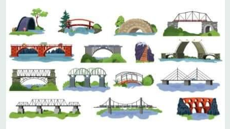

BRIDGES
POEM
🌉🌉🌉🌉🌉🌉🌉
I like a bridge --
Any kind of bridge at all.
A great steel bridge
With towers stiff and tall;
An old covered bridge
That spans a waterfall;
A hewn-stone bridge
With its rugged floor and wall;
A railroad bridge,
Where freight trains slowly crawl;
A wooden bridge,
A cement bridge,
Whether big or small;
Yes, I like a bridge ---
Just any kind of bridge at all.
[James S. Tippetts]

THE ARROW AND THE SONG
🏹🏹🏹🏹🏹🏹🏹🏹🎵🎵🎵🎶🎶🎶🎼🎼🎼
I shot an arrow into the air---
It fell to earth, I knew not where;
For so swiftly it flew, the sight
Could not follow it in its flight.
I breathed a song into the air,
It fell to earth, I knew not where:
For who has sight so keen and strong,
That it could follow the flight of song?
Long long afterwards, in an oak
I found the arrow still unbroke;
And the song, from beginning to end,
I found again in the heart of a friend.
[Henry Wadsworth Longfellow]
THE HEART OF THE TREE
🌳🌳🌳🌴🌴🌴🌲🌲🌲
What does he plant who plants a tree?
He plants the friend of sun and sky;
He plants the flag of breezes free;
The shaft of beauty, towering high;
He plants a home to heaven a-night.
For song and mother-croon of bird
In hushed and happy twilight heard —
The 'treble of heaven's harmony —
These things he plants who plants a tree.
(H.C.Bunner)
Happy the man, whose wish and care
A few paternal acres bound,
Content to breathe his native air
In his own ground.
Whose herds with milk, whose fields with bread,
Whose flocks supply him with attire;
Whose trees in summer yield him shade,
In winter, fire.
Blest, who can unconcern'dly find
Hours, days and years, slide soft away
In health of body, peace of mind,
Quiet by day.
Sound sleep by night, study and ease
Together mix'd; sweet recreation,
And innocence, which most does please
With meditation.
Thus let me live, unseen, unknown;
Thus unlamented let me die;
Steal from the world, and not a stone
Tell where I lie.
(A. pope)
What is this life if, full of care,-
We have no time to stand and stare?
No time to stand beneath the boughs
And stare as long as sheeps or cows:
No time to see, when woods we pass,
Where squirrels hide their nuts in grass:
No time to see, in broad daylight,
Streams full of stars, like skies at night:
No time to turn at Beauty's glance,
And watch her feet, how they can dance:
No time to wait till her mouth can
Enrich that smile her eyes began?
A poor life this if, full of care,
We have no time to stand and stare.
(William Henry Davies)
January cold desolate;
February dripping wet;
March wind ranges;
April changes;
Birds sing in tune
To flower of May,
And sunny June
Brings longest day;
In scorched July
The storm-clouds fly,
Lightning -torn;
August bears corn,
September fruit;
In rough October
Earth must disrobe her,
Stars fall and shoot
In keen November;
And night is long
And cold is strong
In bleak December.
[Christina Rossetti]